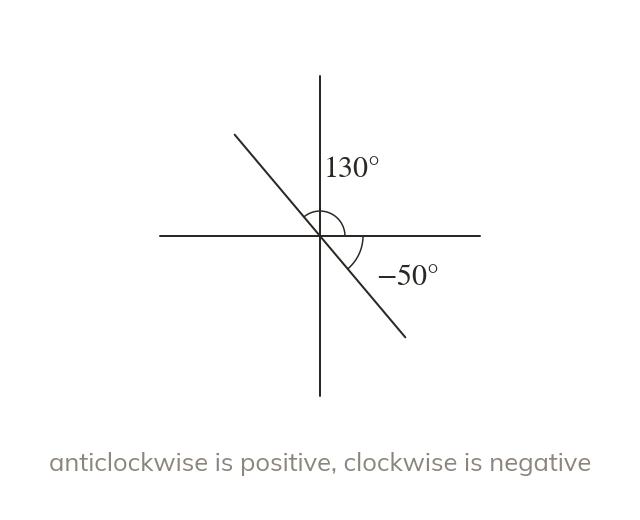
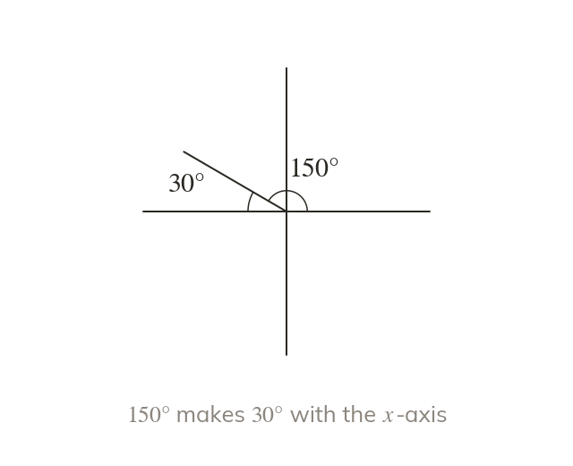
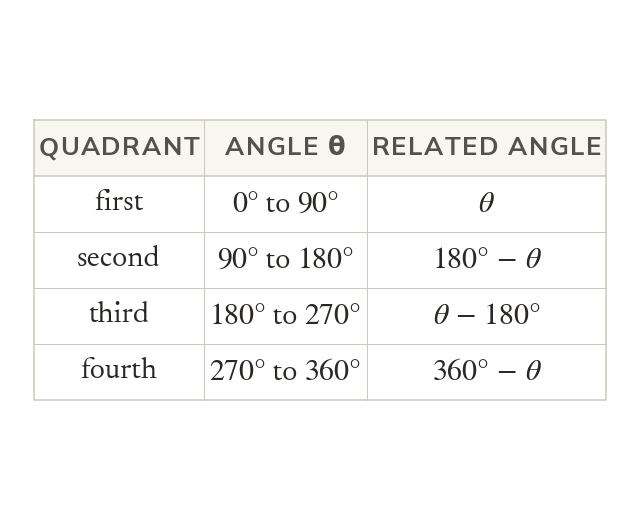
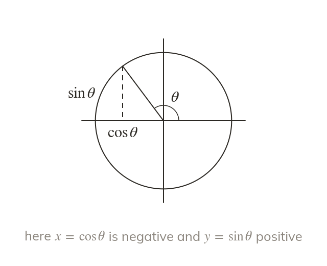
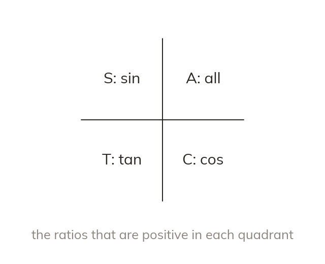
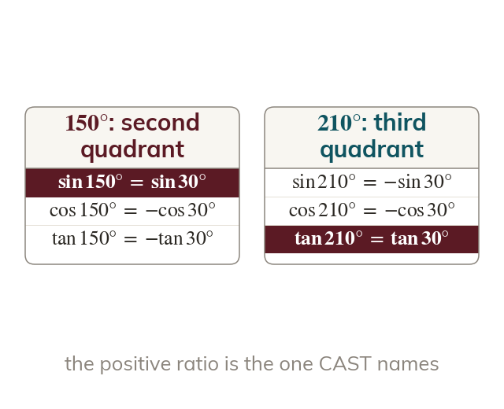

Angles turn from the positive x-axis
An angle is measured from the positive x-axis, anticlockwise when it is positive and clockwise when it is negative. The axes split one turn into four quadrants at and
Sine, cosine and tangent are defined for every angle, not just those in a right-angled triangle, by a point turning round the unit circle. Every angle is tied to an acute angle with a sign from CAST, which the exact values and the equations of this chapter use next.
Work down the page at your own pace. Write every answer in your book first, then click to check it.
Read each card, then follow the worked examples one step at a time.

An angle is measured from the positive x-axis, anticlockwise when it is positive and clockwise when it is negative. The axes split one turn into four quadrants at and

Every angle makes an acute angle with the x-axis, called its related acute angle. It is measured to the nearer half of the x-axis, never to the y-axis.

The related acute angle is the distance from the angle to or whichever is nearest. So each quadrant has its own subtraction.
Pick an answer. If it's wrong, the feedback tells you which mistake it was.
Read each card, then follow the worked examples one step at a time.

The point at angle θ on a circle of radius is and . So each ratio takes its sign from the coordinates of that point.

All three ratios are positive in the first quadrant, then only sin, only tan and only cos as θ turns. Reading anticlockwise from the fourth quadrant spells CAST.

sin, cos or tan of any angle equals the same ratio of its related acute angle. The quadrant decides whether a minus sign goes in front.
Pick an answer. If it's wrong, the feedback tells you which mistake it was.
Finished? Next lesson: 10.2 Exact Values of Trigonometric Ratios.
For each skill, tap the one that is true for you today. Your Revise pages start with anything you mark Not yet.
Your ratings are saved on this device only.
Log in, then search for a code to practise that skill.